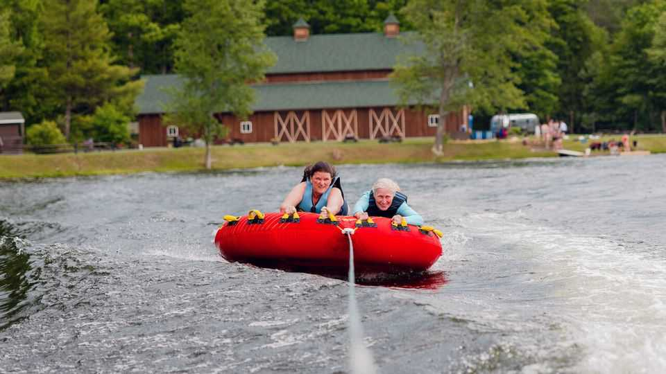
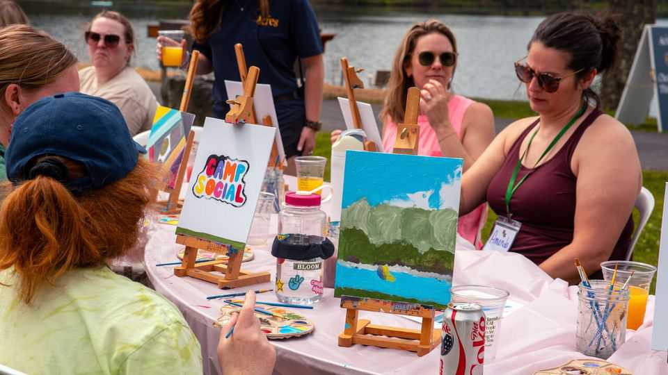

Adults are going back to summer camp
Retreats designed for grown-ups are growing in popularity
June 18th 2026

IT IS SATURDAY at Camp Social, and the dining hall is abuzz. The campers chat excitedly about what the weekend might have in store. Will they spend it making friendship bracelets and tie-dyeing t-shirts, or hiking and kayaking? Many are dressed for adventure, sporting trainers and with water bottles in hand.
Held in the Pocono Mountains of Pennsylvania, Camp Social is a traditional summer camp with an unconventional clientele—for it is one of a growing number of sleepaway camps for adults. Some, such as Camp Social, are aimed at women; others cater to LGBT+ people. Whether you are after festival vibes, a wellness retreat or immersion in nature, someone somewhere has set up a camp for you.
This type of getaway has exploded in popularity in recent years. In 2025 Yelp reported a roughly 350% increase in searches for such weekend breaks. And the trend is not unique to America: similar concepts have popped up across Europe. (Camp Château, for instance, operates across two sites in southern France.)

There are several reasons for camps’ success. One is the stresses of the modern world. In decades past, adults sent their boisterous children away to camp to get some respite from parenting. Now, however, adults are signing up for a respite from their own hectic lives. Camp No Counsellors, which operates across America, invites grown-ups to “remember what it feels like to have fun without a schedule, a deadline or a single work email in sight”.
With no obligations or pressure to look or act a certain way, plus the beautiful backdrop of nature, campers feel they can truly relax. The pre-planned schedule offers a break from the constant decision-making of adulthood. “I like to think of camp as a reset,” says Liv Schreiber, Camp Social’s founder. “You’re just reconnecting to you and leaving the world behind.”
Another reason for the cabin fever is that camps offer the nostalgic pleasures of childhood. Millennials and Gen Z spend their money and free time “kidulting”, whether playing in a ball pit or with soft toys—and what could be more evocative of carefree bygone summers than marshmallows and bunk beds? “Fun”, Ms Schreiber declares, “is the number-one version of self-care.” You can recharge by charging around an inflatable water park.

Finally, the campfires keep burning because adults are yearning for real-world social connections. In America there are fears of a “friendship recession”, as many report having fewer close mates than they once did. Camps, meanwhile, promise meaningful bonds. Camp Social’s website declares that “99% arrive solo, and 100% leave as friends.”
Guests often put away their phones, swapping mindless scrolling for conversations with people from different backgrounds and generations. (The fastest-growing age group at Camp Social is 40- to 70-year-olds, Ms Schreiber notes, and the oldest camper to date was 84.) Kim Barbieri says she has struggled to make friends as a young adult, but formed a group of pals at camp last year. “I’ve never felt as much of a sense of belonging as I did that weekend,” Ms Barbieri asserts. “I feel like I’ve known these four other people for my entire life—and really I spent one weekend with them.”
Summer camp does not come cheap. Several organisations charge around $1,000 for a long weekend (often with meals, lodging and transport included). Some see that as a small price to pay for adventure and friendship. The experience has produced a lot of happy campers. ■
For more on the latest books, films, TV shows, albums and controversies, sign up to Plot Twist, our weekly subscriber-only newsletter